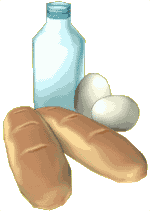
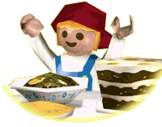

|
| Avec
cette recette, tu pourras préparer un délicieux goûter ! Demande
à une grande personne de t'aider ! |
|
Liste
des ingrédients
Pour préparer 8 tranches de pain doré,
il te faut :
|
8
tranches de pain dur
tranchées fines |
 |
5
verres de lait |
|
1
gousse de vanille |
|
2
œufs |
|
125
g de sucre |
|
125
g de beurre |
|
1
sachet de sucre vanillé |
|
 |
Mode de préparation
Comment préparer
tes tranches de pain doré ?
|
Dans
une casserole, fais bouillir le lait
avec 100 g de sucre et la gousse de vanille que tu auras fendue
dans le sens de la longueur. |
|
Enlève
la gousse de vanille et laisse le mélange refroidir. |
|
Mets
les tranches de pain à tremper dans le lait
refroidi. |
|
Bats
les œufs en omelette avec le reste de sucre. |
|
Egoutte
les tranches de pain sur du papier absorbant et roule les dans les
œufs battus. |
|
Fais
fondre le beurre dans une poêle et fais dorer les tranches
de pain à feu moyen des deux côtés. |
|
Sers
les tranches de pain doré dans un plat et saupoudre les de
sucre. |
Le
conseil d'Alex
Pour
te régaler encore plus, mange tes tranches de pain doré
très chaudes !
Bon Appétit ! |
 |
Pour
tester tes connaissances
sur le monde de la ferme,
Clique ici !
Et pour en savoir plus, tu peux cliquer sur
l'ingrédient souligné
dans la recette !
|